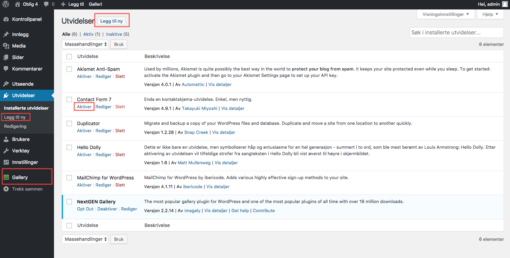

Plugins og widgeter
Det finnes et hav av utvidelser du kan installere i WordPress. Disse installeres gjennom biblioteket i WordPress under fanen "Utvidelser", eller via wordpress.org. Når du har installert en plugin må du aktivere den. Avhengig av plugin vil det komme en ny fane i plattformen. Det følger også med dokumentasjon til de forskjellige utvidelsene, og det er mulighet for å stille spørsmål. Mange krever ingen, eller lite, kunnskap med web. Nedenfor har jeg aktivert NextGEN Gallery som gir mange muligheter når det kommer til bilder. Videre skal vi nå aktivere Contact Form 7 som gir oss muligheten til å få et kontaktskjema på siden vår. 
Nå som vi har aktivert kontaktskjemaet kan vi endre på det slik at det blir slik vi ønsker oss det. Her kan vi endre hvilke felter vi ønsker oss, og meldinger brukerne får ved sendt skjema m.m.